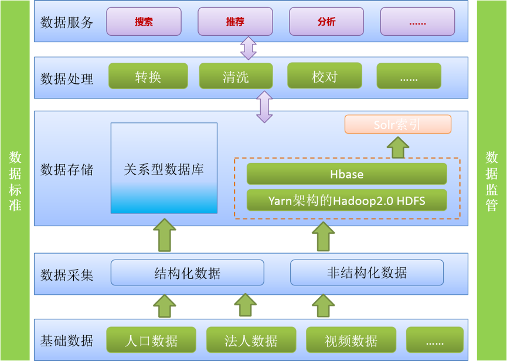

方案概述
通过基础大数据管理平台的建立、形成历史数据存储与应用支持基础框架，持续提高数据传输效率，支持新应用开发，实现智能调度与监控管理，加强数据管控。
总体架构
采用Hadoop架构下MapReduce算法、HDFS/GPFS文件系统处理大量的结构化和非结构化数据，支持可变的数据结构和高校的数据采集、搜索、分析，采用关系数据库与Hadoop相结合的模式实现海量数据的实时计算。
建设内容
建设内容包括数据支撑云平台（DaaS）、应用支撑云平台（PaaS）、应用构件库和基础数据库几大部分。
数据支撑服务包括数据元、代码集、验证规则、业务对象、元数据、数据处理、数据分析、数据检索、数据推荐、数据监控和数据安全等功能。
应用支撑服务包括应用状态监管、应用自动化部署、应用统一运维、平台统一运维、应用容错与迁移、应用集群管理和日志服务功能。
应用构件库包括用户管理、统一身份认证、流程引擎、表单管理、报表组件、、短信邮件等构件。